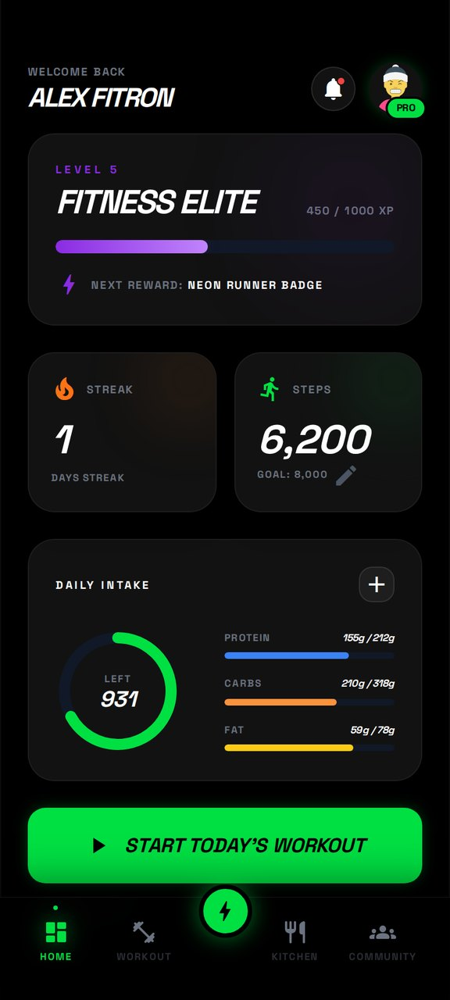
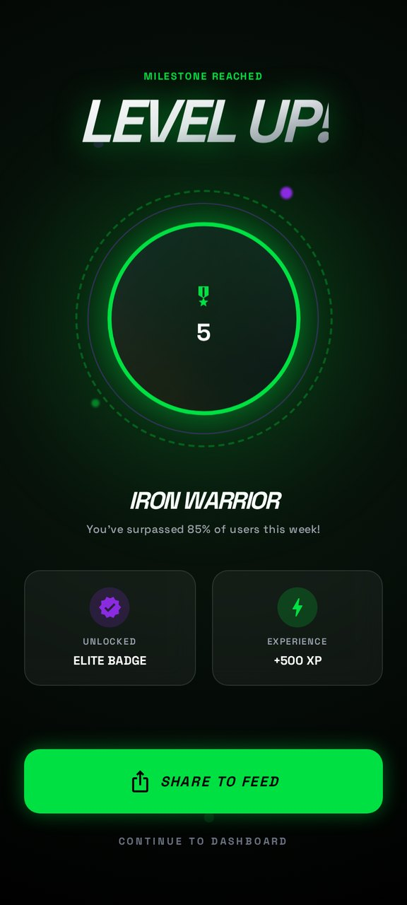
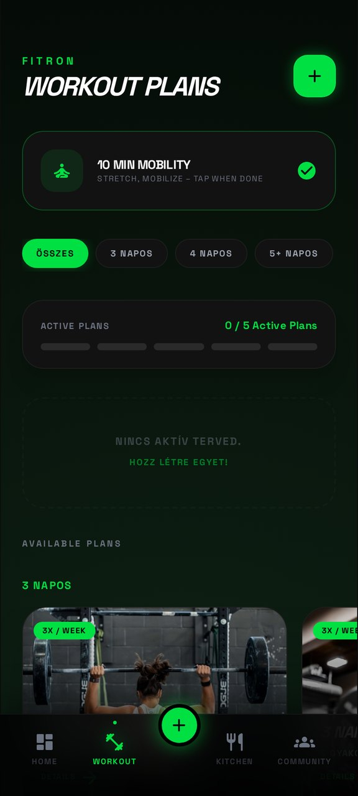
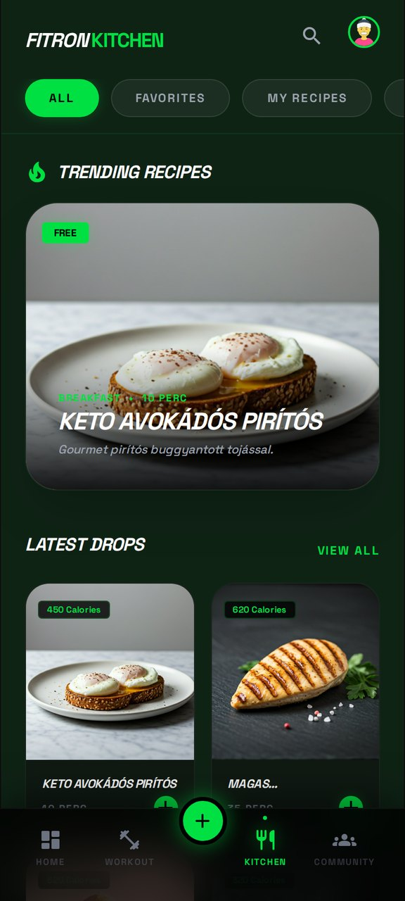
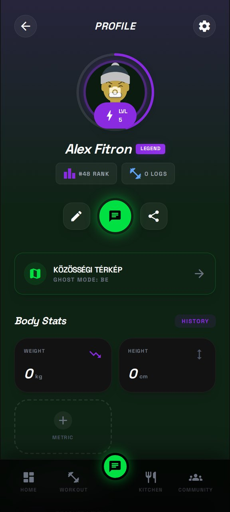

Du machst es nicht allein
Ein Feed, gemeinsame Challenges und die Ergebnisse der anderen vor Augen. Genau das hält dich an den Tagen, an denen du keine Lust hast.
Community × Training × Motivation
Trainingspläne, Makros, Rezepte, Schrittzähler und eine Community, die mitzieht. Alles in einer App, für Android und iPhone.
Kommt für Android und iPhone. Aktuell läuft auf beiden ein geschlossener Test.
Mit dem Handy scannen, und der Download startet.


Ein Feed, gemeinsame Challenges und die Ergebnisse der anderen vor Augen. Genau das hält dich an den Tagen, an denen du keine Lust hast.
Fertige Plaene für zu Hause und fürs Studio. Auswählen, starten, und du konzentrierst dich nur aufs Training.
Schritte, Kalorien, Körpergewicht, XP. Schau Wochen zurück und sieh, was funktioniert hat und was nicht.
Scrolle nach unten, und das Handy geht mit. Das sind keine Mockups, sondern Aufnahmen der laufenden App.
Level und XP oben, darunter deine Serie, die heutigen Schritte und deine Tageszufuhr. Nichts zu suchen, das begrüßt dich sofort.
Bei einem Meilenstein hält die App kurz inne: Rang, Abzeichen und Belohnung. Dieses Feedback bekommst du von einem einfachen Logbuch nie.
Trag ein, was du gegessen hast, und sieh dein Tagesbudget: was übrig ist und wie Eiweiß, Kohlenhydrate und Fett stehen. Nach Mahlzeit aufgeschlüsselt.
Keine Idee mehr? Es gibt genug zur Auswahl. Bei jedem Gericht stehen die Kalorien, ein Tipp und es landet im Tagebuch.
Sieh, was die anderen machen, wo sie in deiner Nähe trainieren, welche Wettkämpfe kommen und wo du stehst.
Wir zählen keine Screens auf. Wir gehen durch, wann du sie herausholst und wofür sie gut ist.
Fertige Plaene für zu Hause und fürs Studio. Auswählen und los. Deine Energie geht nicht in die Planung.

Rezepte mit Kalorien und Zubereitungszeit. Ein Tipp, und die Zufuhr steht schon im Tagebuch.

Körpergewicht, Körperfett, Umfänge, Anzahl der Einheiten. Kein vages Gefuehl, sondern Daten, die du wochenlang zurückverfolgst.

Android-Build fertig, geschlossener Test läuft
iOS-Build auf TestFlight, Tester eingeladen
Öffentlicher Release bei Google Play und im App Store
FITRON ist nicht nur ein Tracker. Es ist eine Plattform, die dir wirklich hilft dranzubleiben, und dich mit Menschen verbindet, die genauso besser werden wollen.
Keine zweite App zwischen den Sätzen. Trag das Gewicht ein, die App zählt XP, Level und deine Wochenlast, und du machst weiter.